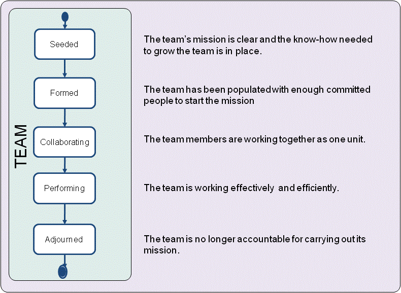

Essence Kernel
Team: The group of people actively engaged in the development, maintenance, delivery and support of a specific software system.
The team plans and performs the work needed to create, update and/or change the software system.
Software engineering is a team sport involving the collaborative application of many different competencies and skills. The effectiveness of a team has a profound effect on the success of any software engineering endeavor. To achieve high performance, team members should reflect on how well they work together, and relate this to their potential and effectiveness in achieving their mission.
Normally a team consists of several people. Occasionally, however, work may be undertaken by a single individual creating software purely for their own use and entertainment. This is however a corner case which can be treated as a team with only one team member.
Teams evolve during their time together and progress through several state changes. As presented in the figure below, the states are seeded, formed, collaborating, performing, and adjourned. They communicate the progression of a software team on the journey from initial conception to the completion of the mission indicating (1) when the team is seeded and the individuals start to join the team (2) when team is formed to start the mission, (3) when the individuals start collaborating effectively and truly become a team, (4) when the team is performing and achieves a crucial level of efficiency and productivity, and (5) when the team is adjourned after completing its mission.

The team is first seeded. This implies defining the mission, deciding on recruitment for the necessary skills, capabilities and responsibilities, and making sure that the conditions are right for an effective group to come together. As the team is formed, the people in the group, and those joining it, bring the necessary skills and experience to the team. The group becomes a team as the people begin to see how they can contribute to the work at hand. As they discover and take account of each others’ capabilities, they start collaborating effectively and make progress towards completing their mission.
At its peak of performing, the team shares a way of working, and plays to its strengths to complete its mission effectively and efficiently. The performing team easily adapts to the changing context and takes appropriate measures. If a number of people join or leave the team, or the context of the mission changes, it may revert to a previous state. Finally, if the team has no further goals or missions to complete, it is adjourned.
It is important to understand the current state of the team so that suitable practices can be used to address the issues and impediments being faced, and to ensure that the team focuses on working effectively and efficiently.
The team�s mission is clear and the know-how needed to grow the team is in place.
The alpha is in this state when:
The team has been populated with enough committed people to start the mission.
The alpha is in this state when:
The team members are working together as one unit.
The alpha is in this state when:
The team is working effectively and efficiently.
The alpha is in this state when:
The team is no longer accountable for carrying out its mission.
The alpha is in this state when:
N/A
N/A
Copyright © 2012 Ivar Jacobson International AB, Florida Atlantic University, Fujitsu, Impetus, International Business Machines Corporation, KTH Royal Institute of Technology, Metamaxim Ltd., PEM Systems, Stiftelsen SINTEF, University of Duisburg-Essen. , ver. 1.0.3